As part of my undergraduate studies at Rose Hulman, I am taking part in an undergraduate research project with Dr. Jason Yoder and my peer Jacob Ashworth. This research is using the NK Fitness Landscape model to simulate and increase our understanding of the interaction between Evolution and Development in the optimization of a population. This research is expanding on the research published in Artificial Life in 2022, by Yoder et.al. My work this year has thus produced significant performance improvements, dynamic landscapes, and greater summary statistics. We are planning to use these tools to study and improve the ways learning strategies can be developed for different types of scenario. The research may be useful both for biological fields and machine learning applications.
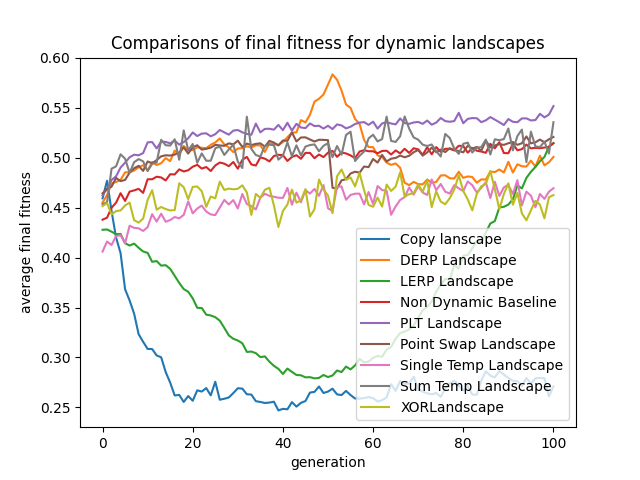 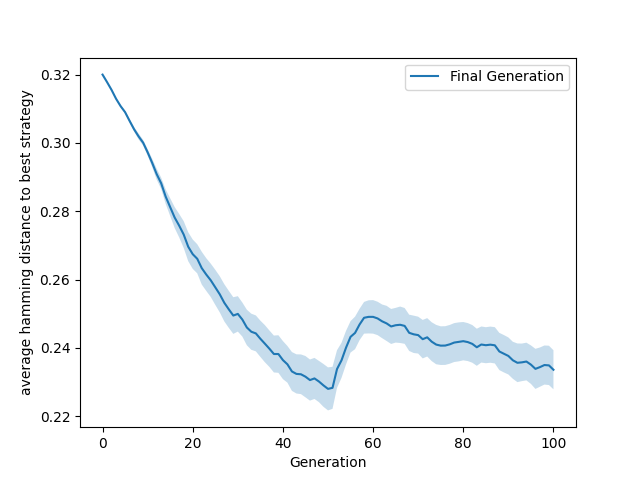
As a final project for my Object Oriented Design Principles course at Rose-Hulman, I worked on a team of three to develop a software which could take compiled java code and produce a UML class diagram of that code. It additionally labelled the object oriented design principles, and design principle violations present in the given code. It was built using test driven development and had complete test coverage.
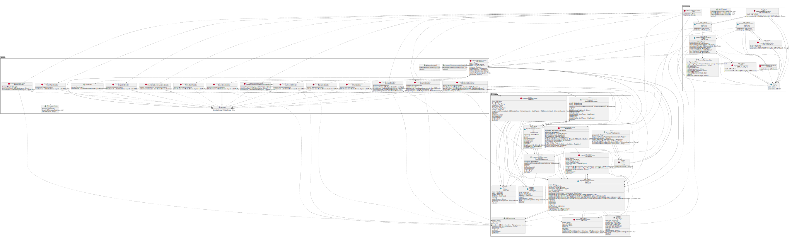Queue is a web application dedicated to helping users prioritize their tasks using computer science principles and the priority queue data structure. Users are able to input thier obligations into the website, and select a function for the priority of the project in the queue. These functions operate on the variables of the item in order to prioritize the queue on each refresh. This allows items with sooner due dates to pass those of higher priority as the due dates arrive. Power users can also choose to define their own functions in order to better fit their own needs.
Bookeeper was the final project for my databases course at Rose-Hulman. This project involved developing a database to suggest books to users based on their reviews, and a nodejs frontend. This project was a collaboration with two other students and was developed over the course of 7 weeks.
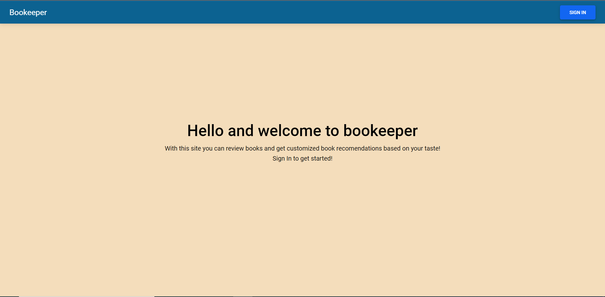 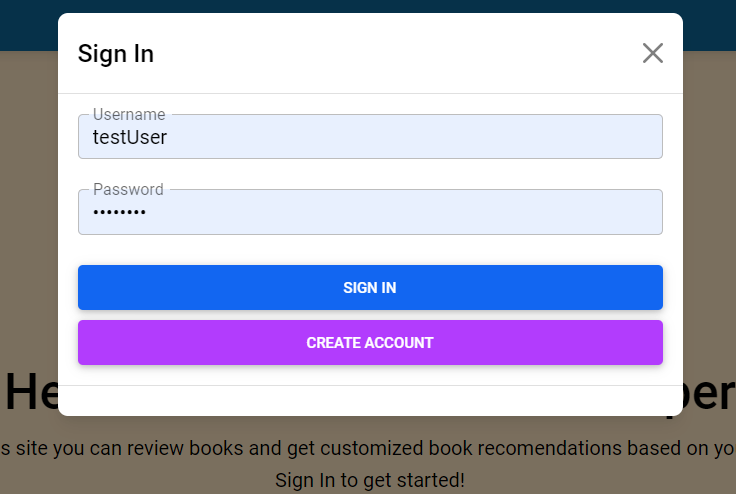 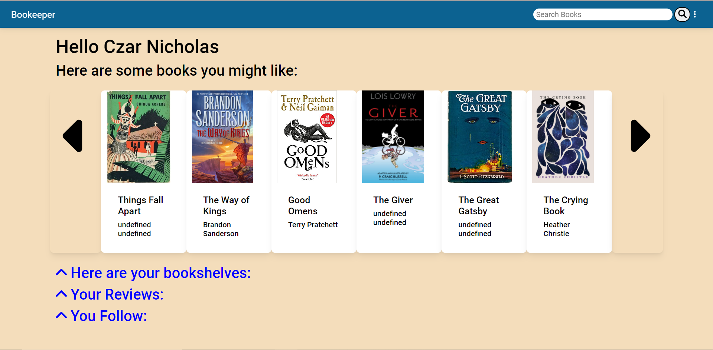 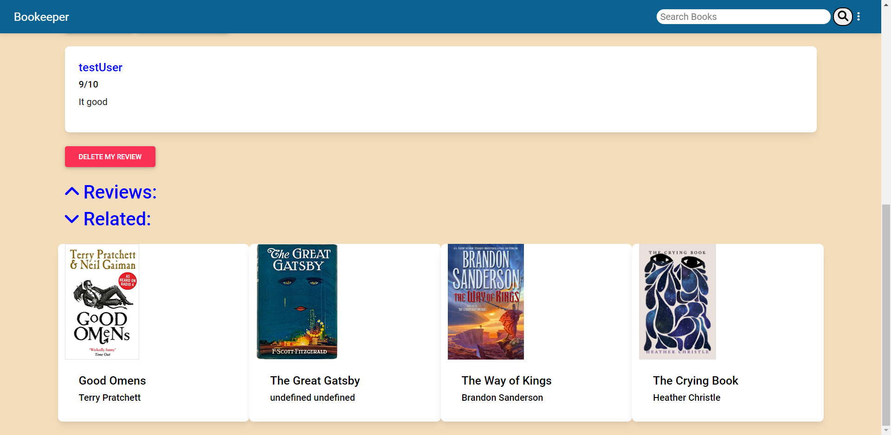As part of the object oriented software development course at Rose-Hulman, we were given a choice of creating a game, the standard final project, or a genetic algoritm with graphical output. I did the later of these, and over the course of a few weeks created a genetic algorithm with my teammates.
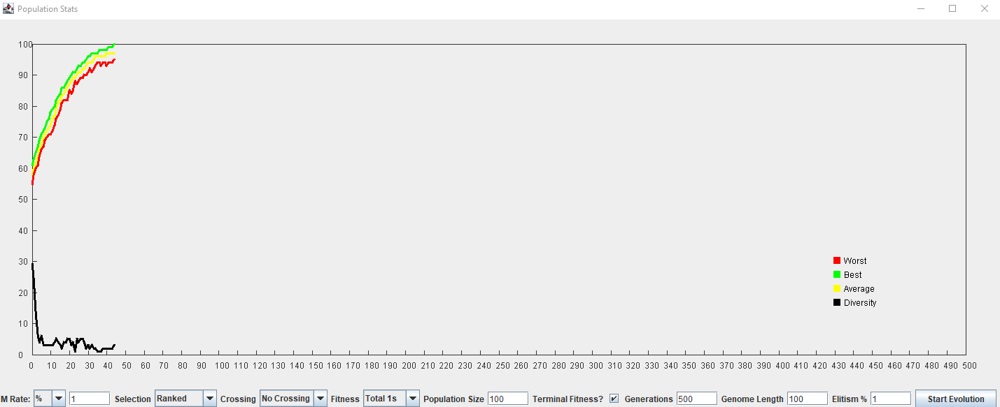 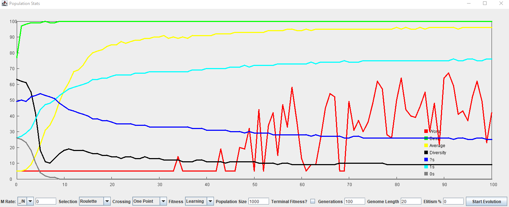For Computer Architecture the final project was to create a functioning processor with a generalizable instruction set. My group succesfully created an accumulator based processor and instruction set.
The final project for the programming language concepts class is to write an interpreter for the scheme programming language (a subset of PERL). This project required the use of continuations, environments, and closures. The project and class were strong introductions to functional programming.
From 4th grade through senior year of highschool I participated on a FIRST robotics team. On this team I was the lead programmer, working on both atonomous and remote controlled operations of our robots. For the majority of this time I was working in Java, to regulate feedback systems.

 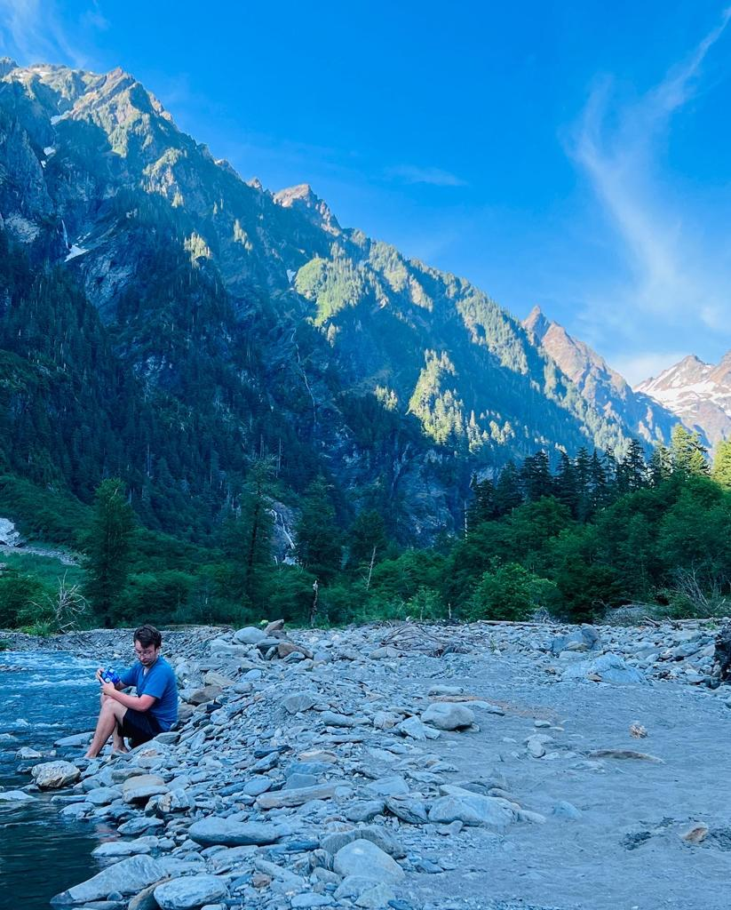
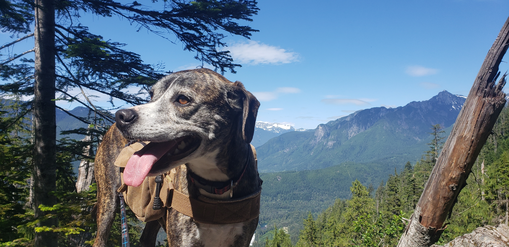
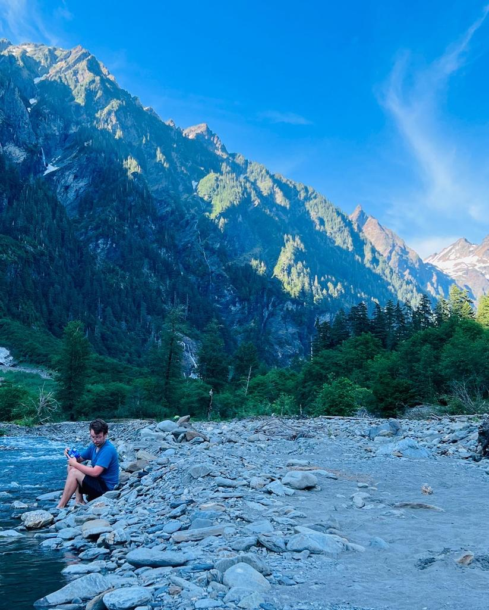
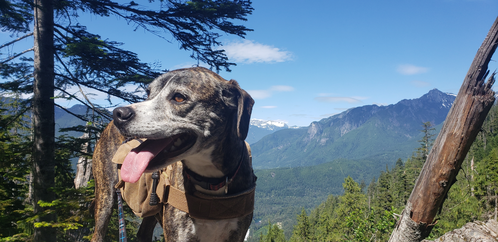